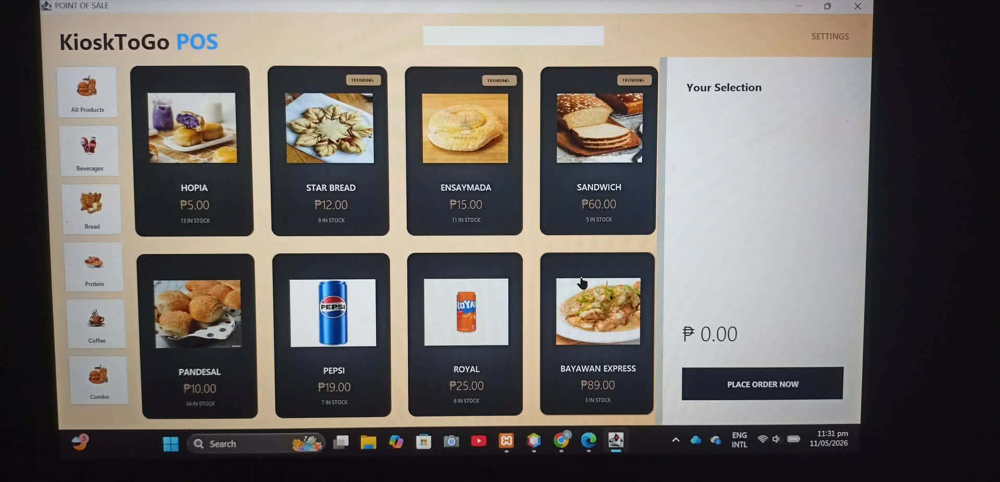
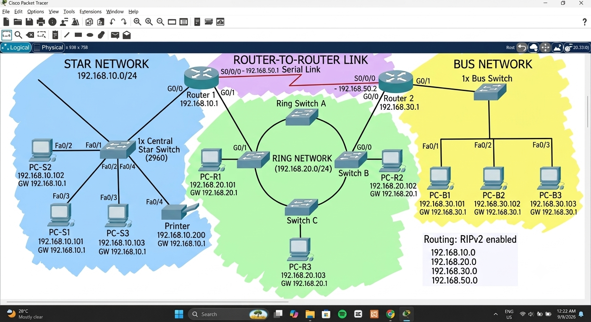
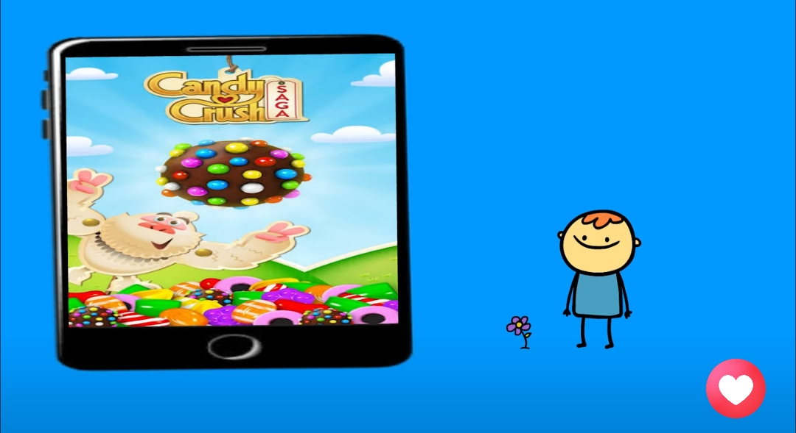
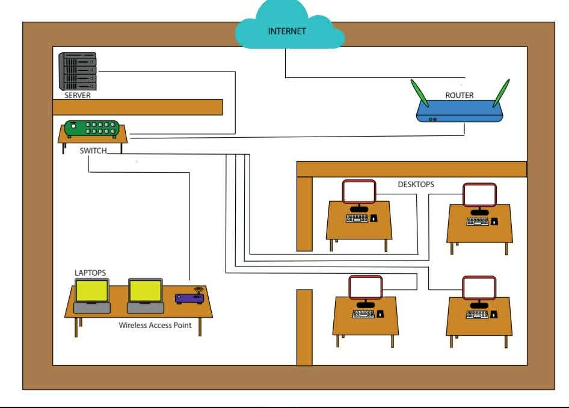
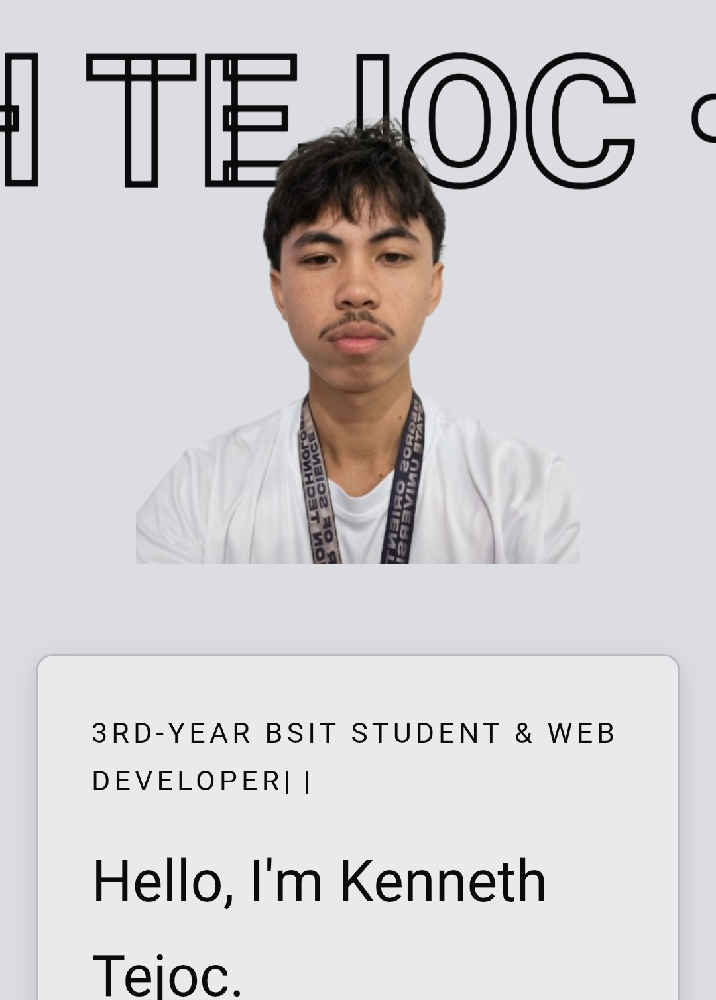

Selected Work
School and personal projects showing my experience in development, design, networking, and problem-solving. Some started with a simple idea and ended with several tabs open.

CompletedKioskToGo POS
I created this point-of-sale project to practice faster and more organized ordering, sales tracking, and kiosk transactions.

CompletedCisco Packet Tracer Network Layout
I created this network layout in Cisco Packet Tracer to practice connecting devices and building a structured network setup.

CompletedAnimate Project
I created this animation project to practice movement, timing, and visual storytelling using Adobe Animate.
Watch Video
CompletedAdobe Illustrator Project
I created this digital design project in Adobe Illustrator to practice layout, illustration, and visual presentation.

OngoingPersonal Portfolio Website
I created this portfolio website to present my skills, projects, experience, and progress as a BSIT student.
View Portfolio